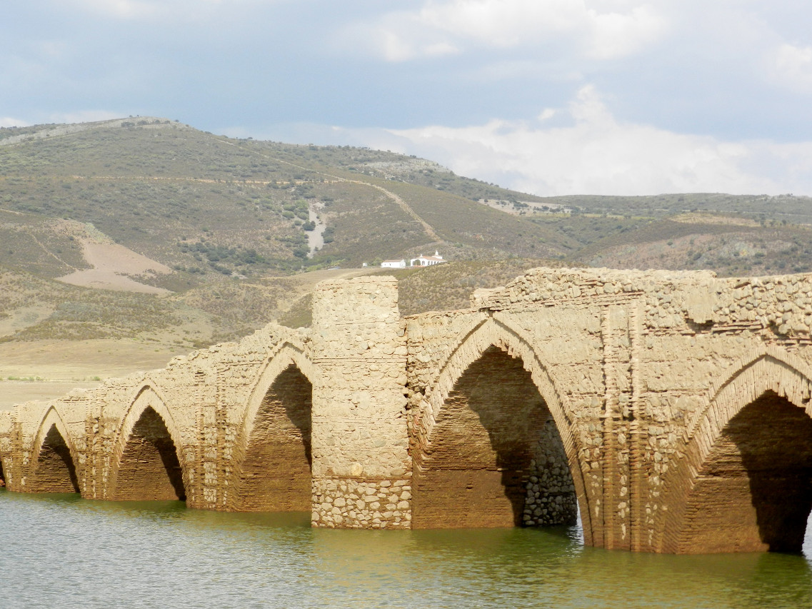

Orígenes
Los orígenes de Villarta se remontan a la Edad Media, vinculados estrechamente a la Mesta debido a las cañadas reales que atraviesan la zona.

Evolución
El territorio de Villarta perteneció a la cora de Al-Belath, que comprendía la zona oriental de Cáceres y de Badajoz hasta Castuera, dentro del reino taifa de Toledo. Más tarde, en una serie de campañas militares, enmarcadas entre los años 1079 y 1085, el rey Alfonso VI de León y Castilla se apodera de las tierras de este reino musulmán de Toledo. Después de la batalla de Sagrajas (1086), se pierden a manos de los almorávides muchas de las tierras comprendidas entre los ríos Tajo y Guadiana. No obstante, este último río sirve de frontera entre el reino de Castilla y el reino árabe a partir del año 1157. Después de la batalla de las Navas de Tolosa (1212), el territorio se ocupa totalmente. A partir de 1444, todo el territorio está bajo el dominio de Gutierre de Sotomayor, Gran Maestre de la Orden de Alcántara y conde de Belalcázar, concedido por el rey Juan II de Castilla. En un censo de 1594, a Villarta se la incluye en la Tierra de Belalcázar en la Provincia de Trujillo.